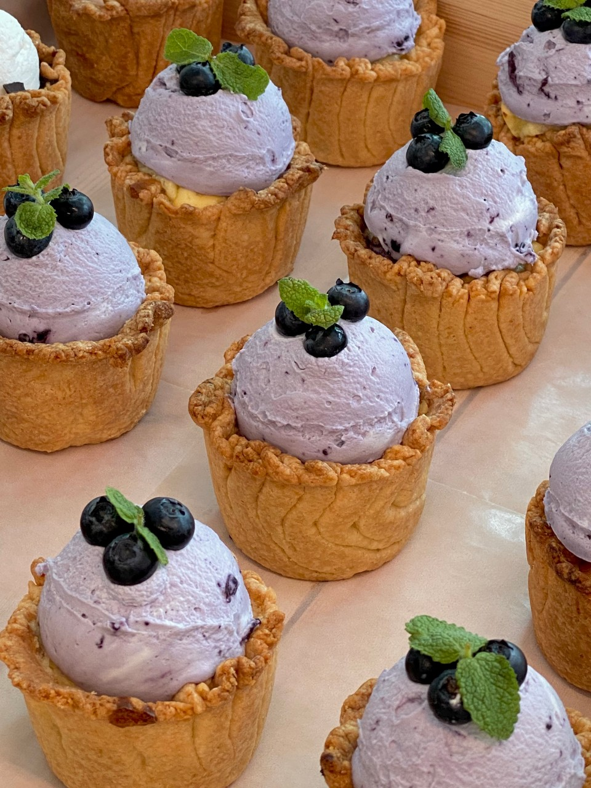
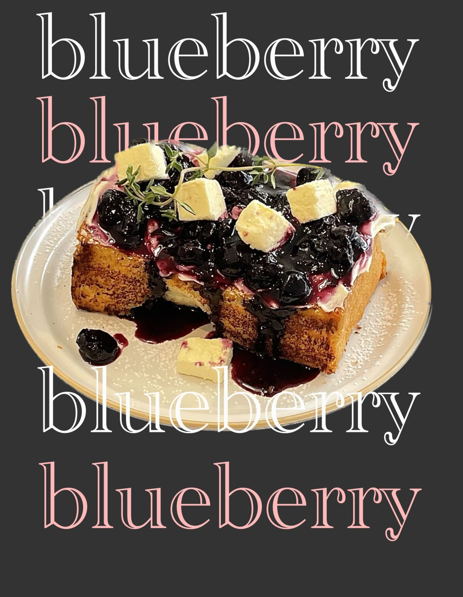
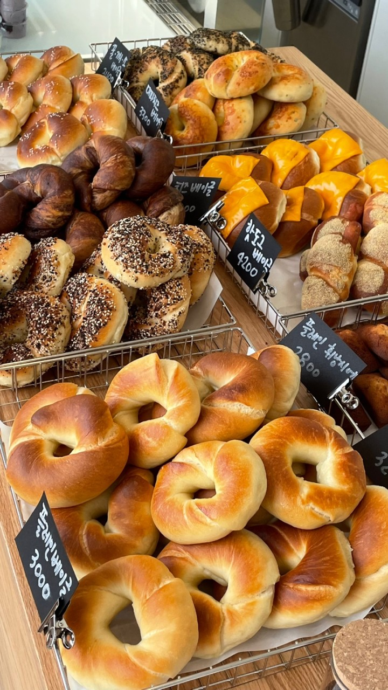
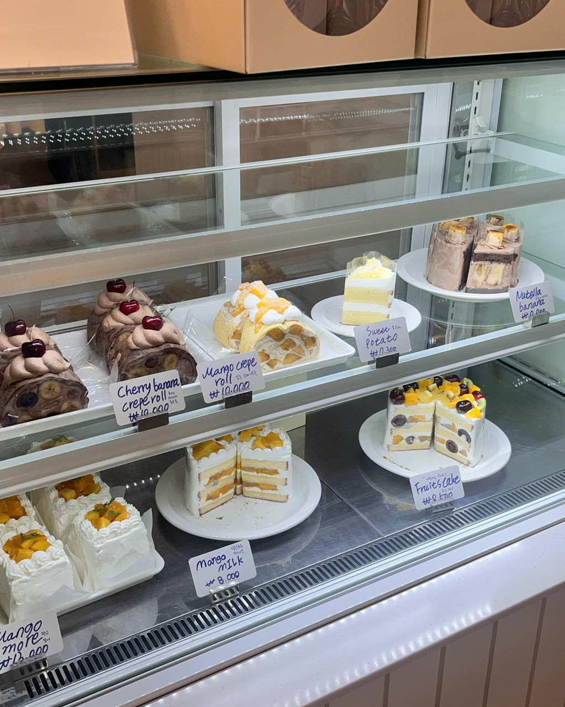
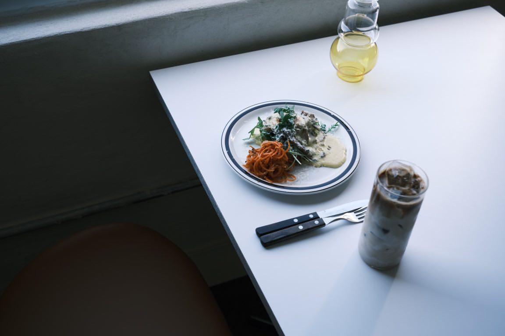

달콤한 디저트는 언제나 우리를 행복하게 해줍니다.
친구들과의 수다, 연인과의 데이트, 혹은 혼자만의 여유로운 시간에 빠질 수 없는 디저트는 맛과 함께 즐거운 추억을 선사합니다.
대전에서 가장 인기 있는 디저트 맛집 5곳을 소개합니다. 이곳들에서 다양한 디저트를 맛보며 달콤한 시간을 보내보세요.
달콤한 디저트는 언제나 우리를 행복하게 해줍니다.
친구들과의 수다, 연인과의 데이트, 혹은 혼자만의 여유로운 시간에 빠질 수 없는 디저트는 맛과 함께 즐거운 추억을 선사합니다.
대전에서 가장 인기 있는 디저트 맛집 5곳을 소개합니다. 이곳들에서 다양한 디저트를 맛보며 달콤한 시간을 보내보세요.
✔️ 매장 정보 바로 가기
바삭바삭한 타르트지와 다양한 종류의 필링이 있는 곳. 대전 탄방동 "원주율" 입니다!
매 월마다 시즌에 맞는 파이를 출시하며 이번 6월이 시즌 파이는 블루베리치즈파이 🫐

타르트 종류를 좋아하신다면 한번쯤 방문해서 먹어봐도 후회 없을 맛집입니다!
✔️ 매장 정보 바로 가기
여러분들은 혹시 전남친 토스트를 아시나요?
전남친 토스트란 바로 블루베리잼에 크림치즈를 함께 빵에 발라 먹는 것이랍니다!
블루베리잼에 크림치즈를 함께 먹으면 맛이 없을 수가 없는 조합인데 이 조합이 더욱 더 맛있는 곳이 있습니다!
바로 갈마동에 위치한 "컴포터블 블루" 입니다!

이 녀석이 바로 컴포터블블루의 대표 메뉴인 블루 토스트입니다! 생긴 것만 봐도 벌써 맛있어 보이죠?
혼자가도 좋고 둘셋이서 가도 좋은 컴포터블블루입니다! 음악 선곡도 좋으니 다들 한번쯤 가보시는게 어떨까요 ?! 💖😆
✔️ 매장 정보 바로 가기
바쁜 아침에 밥 챙겨 먹기가 많이 힘들때는 베이글만한게 없다고 생각하는데요! 마침 맛잇는 베이글 가게가 있어 소개합니다.
로라네 방앗간은 기본 베이글 이외에도 베이글 샌드위치, 수프가 있어 식사하기도 좋은 곳이랍니다!
전날에 사서 다음 날 아침에 먹으면 아침 걱정은 끝 ❗❕

로라네 방앗간은 베이글 말고도 휘낭시에도 있는데 휘낭시에도 무척 맛있답니다!
맛있는 핸드드립 커피도 있으니 브런치로 어떨까요 ? 😚
✔️ 매장 정보 바로 가기
인스타를 뒤적거리다 발견한 곳입니다! 바로 케이크를 판매하고 있는 원신흥동의 "이런날 케이크"
케이크와 빵 둘 다 맛있어서 많이들 오픈런을 해서 구매하곤 하는데요! 이 가게의 대표 메뉴는
"크레이프롤"과 "화이트 카스테라빵", 여름 시즌을 맞이하여 출시된 "망고모어" 입니다!
요즘 망고시루가 대란인데 이런날 케이크의 "망고모어"도 망고가 실하게 들어 있어 망고시루 대신해서 먹어도 괜찮을 듯 합니다! 🥭

깔끔한 외부와 내부 인테리어도 인기의 한 몫하는거 같습니다! 홀케이크 예약도 가능하니 기념일이나 케이크 필요한 날에는
"이런날 케이크"에서 하셔도 좋을 듯 싶어요 🥰🎂
✔️ 매장 정보 바로 가기
이곳 또한 인스타를 뒤적거리다 발견한 곳입니다! 선화동에 위치하고 있는 "올던"입니다!
이곳의 대표 메뉴는 "올던 브렉퍼스트"와 "딥초코 라떼"입니다! 이 대표메뉴 말고도 다양한 샌드위치 형식의 베이글을 파는 곳입니다.

사진만 봐도 메뉴와 음료들이 맛있어 보이지 않나요?! 이 곳은 고양이도 있다는 사실!
브런치를 먹으러 갔는데 고양이까지 볼 수 있다니 ,, 너무 행복할거 같아요!🐱
내외부 인테리어도 깔끔하고 감성적이라 분위기 좋은 곳에서 고양이와 함께 브런치를 즐기고 싶으시다면 한번쯤 방문해보시는 것도 좋을 것 같습니다!
제가 오늘 준비한 곳은 여기까지입니다! 여러분에게 좋은 정보가 되었으면 좋겠네요!
제가 소개한 5곳 모두 한번쯤 가볼만한 곳이니 다들 한번씩 방문해보시면 어떨까요?
이상 "🍨 완벽한 디저트 여행 🥨 당신이 꼭 가봐야 할 곳 BEST 5" 작성자 김자바였습니다!
다음 게시물에는 더욱 더 알찬 내용과 맛집들을 찾아서 다시 돌아오겠습니다. 오늘 하루도 맛있는 하루 되세요!🍀🍽️